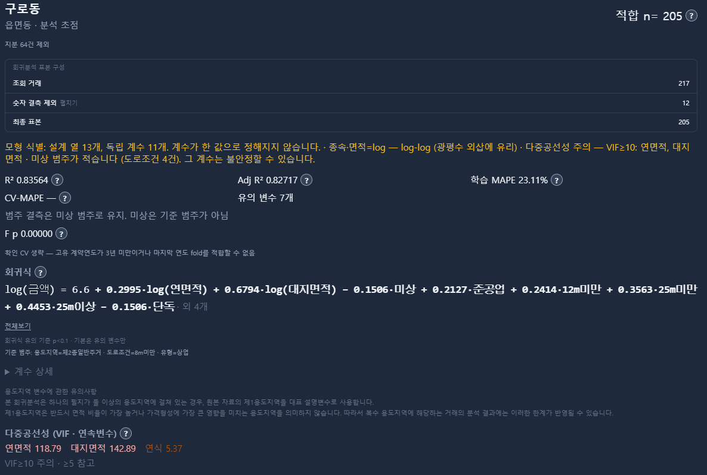

서두 · 학습목표
같은 50㎡ 증가라도 의미가 같을까요?
면적이 50㎡인 토지가 100㎡로 늘어나는 경우와 200㎡인 토지가 250㎡로 늘어나는 경우를 생각해 보겠습니다.
두 경우 모두 면적은 50㎡ 증가합니다.
하지만 증가율은 서로 다릅니다.
첫 번째는 100% 증가이고, 두 번째는 25% 증가입니다.
이번에는 50㎡에서 100㎡로, 200㎡에서 400㎡로 증가하는 경우를 생각해 보겠습니다.
증가한 면적은 서로 다르지만 두 경우 모두 두 배가 됩니다.
이처럼 자료를 분석할 때는 얼마나 증가했는지와 몇 배로 증가했는지를 구별해야 합니다.
로그변환은 이러한 비율 관계를 다루는 데 유용한 방법입니다.
19장에서 배운 다중회귀는 여러 설명변수를 하나의 식에 포함하는 방법이었습니다. 이번 장에서는 변수의 척도를 바꾸거나 곡선 형태의 관계를 도입했을 때 회귀식의 해석이 어떻게 달라지는지 살펴보겠습니다.
이번 장의 학습목표
- 로그변환이 차이와 비율을 어떻게 연결하는지 이해합니다.
- 원래 척도, 로그-선형, 선형-로그, 로그-로그 회귀를 구별합니다.
- 회귀계수와 탄력성을 올바르게 해석합니다.
- 정확한 변화율과 작은 변화에 대한 근삿값을 구분합니다.
- 로그 적합값을 원래 단위로 복원할 때 발생하는 문제를 이해합니다.
- 로그변환과 다항회귀 등 비선형 관계를 표현하는 방법을 알아봅니다.
공통 학습 자료 30건 · 네 모형의 계산 자료 JSON. 실제 거래의 출처·대표성이 검증되지 않은 학습 자료이며, 별도 가상 예제와 구별합니다.
로그의 기본 개념
로그는 곱셈의 관계를 덧셈의 관계로 바꿉니다
로그는 어떤 수를 얻기 위해 밑을 몇 제곱해야 하는지 나타내는 값입니다.
이번 장에서는 밑이 자연상수 e인 자연로그 ln을 사용합니다.
자연로그에는 다음과 같은 성질이 있습니다.
ln(ab) = ln(a) + ln(b)
ln(b/a) = ln(b) − ln(a)
첫 번째 식은 곱셈이 덧셈으로 바뀐다는 뜻입니다.
두 번째 식은 두 값의 로그 차이가 두 값의 비율과 연결된다는 뜻입니다.
간단한 예를 살펴보겠습니다.
- 50에서 100으로 증가하면 두 배입니다.
- 200에서 400으로 증가해도 두 배입니다.
두 경우의 로그 차이는 모두 같습니다.
ln(100) − ln(50) = ln(2)
ln(400) − ln(200) = ln(2)
즉, 출발점이 달라도 같은 비율로 증가했다면 로그값의 차이는 같습니다.
원래 척도에서는 같은 거리만큼 이동하면 같은 금액이나 수량의 차이를 나타냅니다.
반면 로그 척도에서는 같은 거리만큼 이동할 때 같은 배율의 변화가 나타납니다.
예를 들어 10→20, 20→40, 40→80은 모두 두 배이므로 로그 척도에서 이동 거리가 같습니다.
여기서 기억할 점은 로그가 자료의 순서를 바꾸지 않는다는 사실입니다.
양수에 자연로그를 취하면 큰 값은 여전히 큰 로그값을 갖습니다.
다만 값 사이의 간격이 달라집니다.
로그변환은 값의 크기 자체보다 비율의 변화를 표현하기 쉽게 만드는 방법입니다.
로그와 지수함수의 관계
자연로그와 지수함수 exp는 서로 역함수입니다.
ln(exp(x)) = x
exp(ln(x)) = x (x>0)
예를 들어 ln(2)≈0.6931입니다.
반대로 exp(0.6931)≈2입니다.
따라서 로그값의 차이를 원래 척도의 비율로 되돌리고 싶다면 지수함수를 사용할 수 있습니다.
다만 로그값 자체를 그대로 백분율로 읽어서는 안 됩니다.
네 가지 회귀모형
어느 변수에 로그를 적용했는지에 따라 계수의 의미가 달라집니다
회귀분석에서 로그변환을 사용할 때는 종속변수와 설명변수 중 어디에 로그를 적용했는지 먼저 확인해야 합니다.
대표적으로 다음 네 가지 형태를 구분할 수 있습니다.
| 모형 | 회귀식 | 기울기 b의 해석 |
|---|---|---|
| 원래 척도 | Y = a+bX | X가 1 증가할 때 Y가 b단위 달라짐 |
| 로그-선형 | ln Y = a+bX | X가 1 증가할 때 지수변환 적합값이 exp(b)배 |
| 선형-로그 | Y = a+b ln X | X가 약 1% 증가할 때 Y가 약 b/100단위 달라짐 |
| 로그-로그 | ln Y = a+b ln X | X가 약 1% 증가할 때 지수변환 적합값이 약 b% 변함 |
여기서 두 가지를 구별해야 합니다.
첫째, Y에 로그를 취했는가?
Y에 로그를 취했다면 회귀식은 원래 Y가 아니라 ln Y를 적합합니다.
로그 적합값을 지수변환해 원래 척도로 돌릴 수 있지만, 이것이 곧 Y의 산술평균을 나타내는 것은 아닙니다.
둘째, X에 로그를 취했는가?
X에 로그를 취했다면 X의 일정한 증가량보다 일정한 비율의 변화에 초점을 맞추게 됩니다.
네 모형은 같은 자료에 적용할 수 있지만, 계산되는 회귀계수와 잔차의 의미가 서로 다릅니다.
따라서 모형의 이름만 확인하기보다 어느 변수에 어떤 변환을 적용했는지 읽는 것이 중요합니다.
로그-선형 회귀
Y에 로그를 취하면 X의 변화와 Y의 비율 변화를 연결할 수 있습니다
먼저 종속변수 Y에만 로그를 취하는 방법을 살펴보겠습니다.
ln Y = a+bX+ε
면적 X와 거래단가 Y의 관계를 이 형태로 적합하면 다음과 같은 회귀식을 얻었다고 하겠습니다.
ln Y의 적합값 = 5.42759 − 0.004342 × 면적
이 식의 기울기는 약 −0.004342입니다.
면적이 1㎡ 다른 경우 로그 적합값의 차이는 −0.004342입니다.
이를 지수변환하면 원래 척도에서의 비율을 계산할 수 있습니다.
비율 = exp(b × 면적 차이)
따라서 면적이 10㎡ 다른 두 경우의 지수변환 적합값 비율은 다음과 같습니다.
exp(−0.004342 × 10) ≈ 0.9575
변화율은 약 −4.25%입니다.
이는 면적이 10㎡ 큰 경우 지수변환한 로그 적합값이 약 4.25% 낮다는 뜻입니다.
여기서 주의할 점은 이것이 거래단가의 산술평균이 반드시 4.25% 낮아진다는 뜻은 아니라는 사실입니다.
산술평균을 비교하려면 로그모형의 오차를 원래 단위로 되돌릴 때 필요한 보정 요인도 고려해야 합니다.
로그-선형 모형의 정확한 변화율
X가 Δ만큼 달라질 때 지수변환 적합값의 정확한 변화율은 다음과 같습니다.
100[exp(bΔ)−1]%
bΔ가 0에 가까우면 약 100bΔ%로 계산할 수 있습니다.
하지만 변화가 커지면 근삿값과 정확한 값의 차이도 커집니다.
따라서 작은 변화에는 근삿값이 편리하지만, 큰 변화에는 지수함수를 이용한 정확한 계산이 필요합니다.
선형-로그 회귀
X에 로그를 취하면 증가율에 따른 Y의 변화량을 표현할 수 있습니다
이번에는 설명변수 X에만 로그를 취해 보겠습니다.
Y = a+b ln X+ε
공통 학습 자료 30건의 면적과 거래단가를 이용하면 다음과 같은 적합식을 얻습니다.
ŷ = 570.562 − 91.683 × ln(면적)
이 식에서 면적이 1% 증가한다면 거래단가의 적합값은 얼마나 달라질까요?
면적이 X에서 1.01X로 변할 때 적합값의 차이는 다음과 같습니다.
b × ln(1.01)
기울기가 −91.683이므로 계산값은 약 −0.912만원/㎡입니다.
즉, 면적이 1% 큰 경우 회귀식의 적합 거래단가는 약 0.912만원/㎡ 낮아집니다.
여기서 중요한 점은 결과가 백분율이 아니라 종속변수 Y의 원래 단위라는 사실입니다.
이번 예제에서 Y의 단위는 만원/㎡입니다.
따라서 기울기 −91.683을 면적이 1% 증가할 때 거래단가가 91.683% 하락한다는 뜻으로 해석해서는 안 됩니다.
면적 증가율이 달라지면?
X가 c% 증가할 때 정확한 적합값의 변화량은 다음과 같습니다.
b ln(1+c/100)
c가 작다면 약 bc/100으로 계산할 수 있습니다.
예를 들어 면적이 두 배로 늘어나면 변화량은 b ln(2)입니다.
선형-로그 회귀에서는 X의 비율 변화에 따른 Y의 절대적인 변화량을 살펴본다는 점을 기억하세요.
로그-로그 회귀와 탄력성
X가 몇 퍼센트 달라질 때 Y가 몇 퍼센트 달라지는지 살펴봅니다
이번에는 종속변수와 설명변수 모두에 로그를 취해 보겠습니다.
ln Y = a+b ln X+ε
공통 학습 자료 30건에서는 다음과 같은 회귀식이 계산됩니다.
ln Y의 적합값 = 7.33942 − 0.53136 × ln(면적)
로그-로그 모형에서 기울기 b는 지수변환 적합값의 탄력성(Elasticity)으로 해석할 수 있습니다.
탄력성은 X가 일정 비율로 달라질 때 Y가 어느 정도의 비율로 달라지는지를 나타냅니다.
이번 기울기는 약 −0.53136입니다.
따라서 면적이 1% 큰 경우 지수변환 적합값은 약 0.53% 낮아지는 관계를 나타냅니다.
단, 이는 작은 변화에 대한 근삿값입니다.
정확한 변화율은 다음과 같습니다.
100[(1+c/100)ᵇ−1]%
면적이 두 배로 증가한다면 c=100을 적용합니다.
100[2^(−0.53136)−1]%
이 경우 지수변환 적합값은 약 30.8% 낮아집니다.
면적이 두 배가 되었다고 해서 −0.53136에 단순히 100을 곱한 −53.1%를 적용해서는 안 됩니다.
그림에서 증가율이 작을 때는 정확한 변화율과 근삿값이 비슷합니다.
하지만 증가율이 커질수록 차이가 벌어집니다.
이처럼 탄력성은 비율 관계를 간결하게 표현하지만, 큰 변화를 계산할 때는 정확한 식을 사용하는 것이 좋습니다.
또한 이 탄력성은 관찰된 거래자료에서 추정한 관계입니다.
면적이 실제로 증가하면 가격이 반드시 그 비율만큼 달라진다는 인과효과를 의미하지는 않습니다.
이 탄력성은 로그 적합값을 지수변환한 곡선에 관한 것입니다. 원 단위 산술평균의 탄력성에는 E[exp(ε)|X]의 변화도 반영해야 합니다.
같은 자료에서 모형 비교
로그변환을 적용하면 회귀곡선의 형태도 달라집니다
지금까지 살펴본 모형을 같은 자료에 적용하면 어떤 차이가 생길까요?
11장부터 사용한 공통 학습 자료 30건은 면적과 거래단가가 모두 양수이므로 로그변환이 가능합니다.
이번에는 네 가지 모형을 비교해 보겠습니다.
① 원래 척도
ŷ = 232.5090 − 0.6843X
② 로그-선형
ln Y의 적합값 = 5.42759 − 0.004342X
③ 선형-로그
ŷ = 570.562 − 91.683 ln X
④ 로그-로그
ln Y의 적합값 = 7.33942 − 0.53136 ln X
모든 관측점은 같은 위치에 유지됩니다. 로그-선형·로그-로그 곡선은 산술평균 보정 없는 단순 역변환입니다.
원래 척도 모형은 직선으로 나타납니다.
반면 설명변수나 종속변수에 로그를 적용하면 원래 척도에서는 곡선 형태로 나타날 수 있습니다.
이번 자료에서 면적 100㎡를 대입하면 다음과 같습니다.
| 모형 | 면적 100㎡의 계산값 |
|---|---|
| 원래 척도 | 약 164.08만원/㎡ |
| 로그-선형 단순 역변환 | 약 147.43만원/㎡ |
| 선형-로그 | 약 148.35만원/㎡ |
| 로그-로그 단순 역변환 | 약 133.28만원/㎡ |
같은 면적을 대입했는데도 모형의 형태에 따라 적합값이 다르게 나타납니다.
이는 각 모형이 서로 다른 형태의 관계를 자료에 적용하기 때문입니다.
여기서 로그-선형과 로그-로그 모형의 값은 로그 적합값을 단순히 지수변환한 결과입니다.
산술평균으로 복원하기 위한 별도의 보정은 적용하지 않았습니다.
또한 네 개 모형은 모두 원래 자료의 면적 범위인 22~310㎡에서만 비교합니다.
관측 범위를 벗어난 결과는 별도로 검토해야 합니다.
로그변환은 모든 자료에 더 잘 맞는 정답이 아니라, 서로 다른 관계의 형태를 표현하는 선택지 중 하나입니다.
로그값을 원래 단위로 복원하기
지수변환한 값이 항상 산술평균인 것은 아닙니다
로그변환 회귀에서 가장 주의해야 하는 부분이 있습니다.
종속변수에 로그를 적용한 뒤 계산 결과를 다시 원래 단위로 되돌리는 과정입니다.
예를 들어 다음 식을 생각해 보겠습니다.
ln Y = m(X)+ε
로그모형에서 오차의 조건부 평균이 0이라고 가정하면, m(X)는 ln Y의 조건부 평균입니다.
양변의 지수함수를 생각해 보면 다음과 같습니다.
Y = exp(m(X)) × exp(ε)
따라서 원래 단위에서 Y의 조건부 산술평균은 다음과 같습니다.
E[Y|X] = exp(m(X)) E[exp(ε)|X]
여기서 중요한 것은 오른쪽의 두 번째 항입니다.
E[exp(ε)|X]
이 값은 일반적으로 1과 같지 않습니다.
따라서 exp(m(X))만 계산하면 Y의 산술평균을 정확하게 복원하지 못할 수 있습니다.
이 점을 간단한 가상 예제로 살펴보겠습니다.
세 개의 양수값이 1, 2, 8이라고 가정합니다.
산술평균은 다음과 같습니다.
(1+2+8)/3 ≈ 3.67
반면 기하평균은 다음과 같습니다.
(1×2×8)^(1/3) ≈ 2.52
두 평균은 서로 다릅니다.
로그 평균을 지수변환하면 기하평균에 해당합니다.
산술평균은 별도로 계산하거나 적절한 재변환 보정을 고려해야 합니다.
단, 로그오차의 조건부 중앙값이 0이라면 exp(m(X))는 원래 Y의 조건부 중앙값이기도 합니다.
로그오차의 조건부 평균이 0이라는 조건만으로 중앙값까지 0이 된다고 볼 수는 없습니다.
이처럼 로그값을 복원할 때는 산술평균, 기하평균, 중앙값 중 무엇을 추정하려는지 먼저 구분해야 합니다.
재변환 보정과 스미어링 방법
로그모형의 오차가 조건부 정규분포를 따르고 분산이 σ²로 일정하다면 다음 관계가 성립합니다.
E[Y|X] = exp(m(X)+σ²/2)
즉, 단순 지수변환한 값에 분산을 고려한 보정을 적용합니다.
정규분포를 가정하지 않고 보정하는 방법으로는 Duan의 스미어링(Smearing) 방법이 있습니다.
로그모형에서 계산한 잔차 eᵢ를 이용해 다음 보정계수를 구합니다.
S = (1/n) Σ exp(eᵢ)
단순 지수변환 적합값에 S를 곱해 산술평균을 추정할 수 있습니다.
다만 하나의 공통 보정계수를 사용하는 방법이 적절하려면 오차의 지수 평균이 설명변수에 따라 달라지지 않는다는 조건 등이 필요합니다.
그 조건이 맞지 않으면 설명변수의 값에 따른 별도의 보정 방식을 검토해야 합니다.
또한 보정계수를 검증 자료까지 포함해 계산하면 데이터 누출이 발생할 수 있으므로 학습 자료에서만 추정해야 합니다.
로그변환과 예측구간
로그 척도의 구간을 원래 단위로 바꾸면 비대칭이 됩니다
로그회귀에서는 회귀계수뿐 아니라 신뢰구간과 예측구간도 원래 단위와 구별해야 합니다.
로그 척도에서 적합값을 중심으로 대칭적인 구간이 계산되었다고 가정해 보겠습니다.
이 구간의 양 끝에 지수함수를 적용하면 원래 단위에서는 대칭적이지 않은 구간이 됩니다.
이는 지수함수가 직선이 아니라 곡선 형태로 증가하기 때문입니다.
또한 로그 평균에 대한 신뢰구간을 지수변환했다고 해서 Y의 산술평균에 대한 신뢰구간이 자동으로 만들어지는 것은 아닙니다.
로그 적합값의 지수변환은 기하평균과 연결되며, 산술평균을 추정하려면 재변환 보정과 그 불확실성을 고려해야 하기 때문입니다.
반면 적절하게 계산한 로그 척도의 개별 관측 예측구간은 단조증가하는 지수함수를 통해 원래 척도의 예측구간으로 옮길 수 있습니다.
평균의 신뢰구간과 개별 관측의 예측구간은 서로 다른 대상을 추정한다는 점을 기억하세요.
모형의 적합도와 예측오차
로그모형과 원래 척도 모형은 같은 기준으로 비교해야 합니다
로그변환을 적용하면 회귀모형이 더 좋아지는지 확인하고 싶을 수 있습니다.
하지만 서로 다른 척도로 적합한 모형의 결과를 단순히 비교해서는 안 됩니다.
예를 들어 Y를 종속변수로 사용한 회귀의 R²와 ln Y를 종속변수로 사용한 회귀의 R²는 서로 다른 변동을 기준으로 계산됩니다.
따라서 두 R²를 직접 비교해 어느 모형이 더 우수하다고 단정하기 어렵습니다.
대신 같은 관측값을 대상으로, 같은 결과 단위에서 예측오차를 비교할 수 있습니다.
공통 학습 자료 30건에 대한 원래 단위 MAE의 예시는 다음과 같습니다.
| 모형 | 학습 MAE |
|---|---|
| 원래 척도 회귀 | 38.16만원/㎡ |
| 로그-선형 단순 역변환 | 32.04만원/㎡ |
| 로그-로그 단순 역변환 | 27.16만원/㎡ |
이 결과만 보면 로그-로그 모형의 MAE가 가장 낮습니다.
하지만 이는 회귀식을 만들 때 사용한 같은 30건에서 계산한 학습 오차입니다.
따라서 새로운 거래자료에서도 로그-로그 모형이 가장 정확할 것이라고 판단할 수는 없습니다.
또한 로그모형의 값은 산술평균 보정을 적용하지 않은 단순 역변환값입니다.
평가 지표도 목적에 따라 선택해야 합니다.
MAE는 절대적인 오차의 크기를 요약하고, RMSE는 큰 오차에 더 민감합니다.
MAPE는 실제값 대비 상대오차를 요약하지만 실제값이 0이거나 매우 작을 때 문제가 발생할 수 있습니다.
예측모형을 비교할 때는 같은 검증 자료, 같은 목표 단위, 같은 오차 지표를 사용해야 합니다.
또한 로그변환 이후에도 잔차의 패턴, 이분산, 극단적인 관측값의 영향을 다시 점검해야 합니다.
보충 그림: 원래 척도와 로그 척도의 잔차
0과 음수의 처리
로그를 적용하기 전에 값의 범위를 확인하세요
자연로그는 실수 범위에서 양수에 대해서만 정의됩니다.
따라서 다음 조건이 필요합니다.
X>0
0이나 음수에는 일반적인 자연로그를 그대로 적용할 수 없습니다.
부동산 거래금액이나 면적은 통상 양수이지만, 모든 경제·통계 변수가 양수인 것은 아닙니다.
예를 들어 수익률, 변화액, 순이익, 잔액 등에는 0이나 음수가 나타날 수 있습니다.
이 경우 해당 관측값을 아무런 설명 없이 제외해서는 안 됩니다.
자료의 오류인지, 실제로 의미 있는 값인지 먼저 확인해야 합니다.
로그변환을 적용할 수 없다는 이유로 관측값을 제외하면 분석 대상과 표본의 구성이 달라질 수 있기 때문입니다.
일부 분석에서는 ln(1+X)를 사용하기도 합니다.
하지만 이것은 단순한 로그변환과 다른 모형입니다.
특히 값이 작을 때는 측정 단위에 따라 결과가 달라질 수 있으며, 일반적인 로그-로그 모형의 탄력성 해석을 그대로 적용할 수 없습니다.
변환은 계산 편의를 위한 임시 처리에 그치지 않고, 자료와 회귀식의 의미를 바꾸는 선택입니다.
로그변환과 측정 단위
단위를 바꾸면 회귀계수는 어떻게 달라질까요?
회귀분석에서는 변수의 단위를 명확하게 표시해야 합니다.
예를 들어 토지의 면적을 ㎡로 측정하다가 평으로 환산할 수 있습니다.
두 면적은 같은 물리적 크기를 나타내지만 숫자의 크기는 달라집니다.
자연로그에서는 양의 상수 c를 곱하면 다음과 같습니다.
ln(cX) = ln X + ln c
즉, 단위 변환에 따라 로그 설명변수에는 일정한 상수가 더해집니다.
절편을 포함한 로그-로그 회귀에서 동일한 자료와 모형을 유지한다면 이러한 단위 변환은 절편을 바꾸지만 로그-로그 기울기는 바꾸지 않습니다.
따라서 같은 관계의 탄력성은 그대로 유지됩니다.
반면 X를 원래 단위로 사용하는 로그-선형 모형에서는 X의 측정 단위를 바꾸면 회귀기울기의 숫자도 달라집니다.
어떤 변환을 적용했든 계수의 해석에는 변수의 단위와 변환 방식을 함께 기록해야 합니다.
비선형 관계와 다항회귀
곡선으로 나타나는 관계도 선형회귀로 계산할 수 있습니다
회귀분석에서 선형이라는 말은 반드시 그래프가 직선이라는 뜻일까요?
그렇지는 않습니다.
통계학에서 선형회귀는 일반적으로 추정하려는 회귀계수에 대해 선형인 모형을 말합니다.
예를 들어 다음 두 식을 살펴보겠습니다.
① 로그 설명변수를 사용한 모형
Y = a+b ln X+ε
② 제곱항을 사용한 다항회귀
Y = a+bX+cX²+ε
두 식은 원래 X축에서 곡선을 그릴 수 있습니다.
하지만 추정할 계수 a, b, c에 대해서는 선형입니다.
따라서 ln X나 X²를 하나의 설명변수 열로 구성해 일반적인 선형 최소제곱법으로 적합할 수 있습니다.
특히 제곱항을 포함한 모형에서는 X의 기울기가 일정하지 않습니다.
dŶ/dX = b+2cX
즉, X의 값에 따라 적합값의 변화 속도가 달라집니다.
예를 들어 토지면적이 증가할수록 단가가 하락하되, 일정 면적 이후 하락 속도가 완만해지는 관계를 곡선으로 표현할 수 있습니다.
다만 실제로 이러한 관계가 존재하는지는 자료를 통해 검증해야 합니다.
또한 곡선 형태가 더 복잡하다는 이유만으로 더 좋은 모형이 되는 것은 아닙니다.
설명변수의 수와 함수 형태가 늘어나면 과적합 위험도 함께 고려해야 합니다.
로그회귀와 지수곡선 회귀는 같은 모형일까요?
다음 두 식은 모두 원래 척도에서 지수곡선과 관련되지만 같은 통계모형은 아닙니다.
로그오차 모형
ln Y = a+bX+ε
원래 단위의 가산오차 모형
Y = A exp(bX)+u
첫 번째 모형은 로그 척도의 잔차제곱합을 최소화합니다.
두 번째 모형을 원래 단위의 비선형 최소제곱으로 적합한다면 Y의 원래 단위에서 잔차제곱합을 최소화합니다.
따라서 오차 구조와 추정 기준, 계수의 결과가 서로 다를 수 있습니다.
단순히 그래프가 비슷하다고 같은 회귀모형으로 취급해서는 안 됩니다.
확인 문제
로그계수의 단위와 변환 후의 의미를 구분해 보세요
- ln Y=a+0.1X라면 X가 1 증가할 때 Y가 정확히 10% 증가할까요?
답과 해설
아닙니다.
지수변환 적합값의 정확한 변화율은 다음과 같습니다.
100[exp(0.1)−1] ≈ 10.52%
10%는 작은 계수에 대한 근삿값입니다.
- Y=a+b ln X에서 X가 1% 증가하면 Y가 b% 달라질까요?
답과 해설
아닙니다.
적합값의 변화량은 b ln(1.01)입니다.
이는 Y의 원래 단위로 측정된 변화량이며, 백분율 변화가 아닙니다.
- ln Y의 적합값을 지수변환하면 원래 Y의 산술평균이 될까요?
답과 해설
일반적으로 그렇지 않습니다.
로그 적합값을 지수변환하면 조건부 기하평균과 연결됩니다.
산술평균을 추정하려면 로그오차에 대한 적절한 재변환 보정을 고려해야 합니다.
- ln(1+X)에서도 로그-로그 기울기를 그대로 탄력성으로 해석할 수 있을까요?
답과 해설
그렇지 않습니다.
변환한 함수가 달라지므로 변화율도 해당 함수에서 다시 계산해야 합니다.
CH2 Macro에서 읽기
실제 로그-로그 회귀 화면에서 변환·보정·검증 범위를 읽으세요
아래는 구로동 복합부동산 로그-로그 회귀 화면입니다. 조회 거래 217건에서 숫자 결측 12건을 제외한 적합 표본 205건이 표시됩니다. ‘지분 64건 제외’는 별도 조건이며, 이 캡처만으로 전체 필터 처리 순서를 재구성하지 않습니다. 공통 학습 자료 30건과 다른 사례입니다.

이 식의 종속변수는 log(금액)입니다. 학습 예제의 log(단가)와 구별하세요. 복합의 log-log 설정은 금액과 선택된 연면적·대지면적에 자연로그를 적용합니다. 연식과 범주 더미까지 모두 로그로 바꾸는 모형은 아닙니다. 개별공시지가는 선택되면 별도로 자연로그를 사용합니다.
화면의 연면적계수 0.2995는 식별된 가산적 로그-로그 모형이라면, 다른 포함 변수를 고정하고 연면적이 1% 다를 때 단순 역변환 적합값이 약 0.30% 다르다는 식으로 읽습니다. 하지만 이 캡처는 설계 열 13개에 독립 계수 11개로 계수가 고유하지 않다는 경고가 있습니다. 따라서 0.2995나 0.6794를 안정적으로 식별된 개별 탄력성 또는 인과효과로 확정해서는 안 됩니다.
학습 R²=0.83564와 수정 R²=0.82717은 로그 금액 척도의 표본 내 적합도입니다. 원 단위 모형의 R²와 직접 순위를 매기지 마세요. 학습 MAPE=23.11%는 원래 금액으로 복원한 값에 대한 학습 오차입니다. ‘CV-MAPE —’는 0% 오차가 아니라 검증값을 산출하지 못했다는 뜻입니다. 화면에는 고유 계약연도가 3년 미만이거나 마지막 연도 fold를 적합할 수 없다는 안내가 있습니다. 이 이미지로 어느 조건이 원인인지 더 좁혀 판단할 수는 없습니다.
본문의 로그 곡선은 보정 없는 단순 지수변환입니다. 반면 현재 복합 구현은 로그모형의 원 단위 적합값·MAPE와 점추정에 학습 잔차로 구한 Duan 스미어링 계수를 곱합니다. 같은 로그식이라도 두 계산 대상을 섞어 비교하면 안 됩니다. 공통 보정이 조건부 산술평균을 적절히 추정하는지는 오차 구조에 따라 다시 점검해야 합니다.
실제 서비스의 변환·재변환·모형 비교 방식
확인한 복합 경로는 원래 금액, 로그 금액, 금액·면적 로그 모형을 지원하며 np.log와 np.exp, 즉 자연로그와 지수함수를 사용합니다. 로그를 취할 열의 0·음수와 선택된 수치열의 결측은 적합 마스크에서 제외됩니다. 모든 앱이 같은 규칙이라고 가정하지 말고 최종 표본수와 제외 사유를 확인하세요.
복합의 롤링 시점 검증에서는 각 학습 fold의 잔차만으로 스미어링 계수를 구해 검증 금액을 복원합니다. 검증 거래의 실제 금액은 오차 평가에 사용하며 보정계수 계산에는 사용하지 않습니다. 다만 이것만으로 변수 선택·범주 구성 등 전처리 전체의 누출 가능성까지 검증되었다는 뜻은 아닙니다.
복합의 점추정과 평균 구간 양 끝에는 학습 스미어링 계수를 곱하고, 개별 예측구간 양 끝에는 단순 지수변환을 적용합니다. 평균 구간에 추정된 보정계수의 불확실성까지 전파하는 계산은 확인한 경로에 포함되지 않습니다. 화면의 평균 구간을 재변환 불확실성이 모두 반영된 구간으로 해석하지 않습니다.
집합 주거 회귀의 확인한 경로도 로그 종속변수와 스미어링 보정, 학습 fold 잔차에 의한 교차검증 복원을 사용합니다. 다만 이 사실을 집합 비주거·층지수·모든 지역 분석이 같은 종속변수와 표본 규칙을 사용한다는 뜻으로 확대하지 않습니다. 금액·단가·지수 중 분석 대상을 먼저 확인하세요.
확인한 복합 척도 비교 경로는 같은 변수 블록에 대해 양수 금액·선택된 면적 조건을 공통 적용한 뒤 원래 금액·로그 금액·금액과 면적 로그 후보를 적합합니다. 예측형은 원 단위 CV-MAPE를 우선하며, 없으면 학습 MAPE, 이후 AIC를 참조합니다. 설명형은 로그 종속변수 후보끼리 AIC를 비교합니다. 모든 앱·서로 다른 변수 블록의 표본까지 같다는 뜻은 아니므로 유효 표본수와 제외 조건을 함께 확인하세요.
이 캡처의 VIF는 연면적 118.79, 대지면적 142.89, 연식 5.37입니다. 현재 복합 VIF는 더미와 상수항을 뺀 연속변수만으로 절편 없는 보조회귀를 적합해 계산합니다. 그 결정계수는 절편을 넣은 보조회귀의 결정계수와 다릅니다. 화면의 VIF≥5와 VIF≥10은 절편 포함 VIF의 관행적 기준을 이 값에 붙인 문구입니다. 다중공선성 수준은 그 숫자만으로 판단하지 않고, 계산 방식과 설계행렬의 구조도 함께 확인합니다. 로그변환이 공선성이나 모형 식별 문제를 자동 해결하지 않는다는 점을 기억하세요. ‘미상’도 기준 범주와 다릅니다.
이 장의 제곱항·상호작용 설명은 학습 원리입니다. 확인한 복합 기본 설계 경로에서는 이 항을 자동 생성하지 않으므로, 첨부 로그-로그 화면을 다항회귀 화면이라고 설명하지 않습니다. 관측 범위 밖의 적용과 개별 물건의 적정가격 해석도 별도 검토가 필요합니다.
결론 · 학습 요약
로그변환은 회귀계수의 의미와 예측 대상까지 바꿉니다
로그변환은 크기가 다른 값을 단순히 압축하는 기술이 아닙니다.
변수 사이의 관계를 절대적인 차이 또는 비율의 변화로 표현하는 방식이기도 합니다.
따라서 어떤 변수에 로그를 취했는지, 회귀계수를 어떻게 해석해야 하는지, 원래 단위로 복원할 때 무엇을 추정하는지 구분해야 합니다.
이번 장에서 기억할 내용
- 로그의 의미: 같은 비율의 변화는 같은 로그 차이로 나타납니다.
- 네 가지 모형: Y와 X 중 어디에 로그를 취했는지에 따라 계수 해석이 달라집니다.
- 로그-선형: X의 차이를 지수변환 적합값의 비율 변화와 연결합니다.
- 선형-로그: X의 비율 변화에 따른 Y의 절대적인 변화량을 나타냅니다.
- 로그-로그: 기울기를 지수변환 적합값의 탄력성으로 해석할 수 있습니다.
- 재변환: 로그 적합값을 지수변환한 결과가 원래 단위의 산술평균은 아닐 수 있습니다.
- 모형 비교: 같은 자료와 같은 목표 단위에서 예측오차를 비교해야 합니다.
- 비선형 관계: 로그항과 제곱항처럼 곡선을 만드는 설명변수도 선형 최소제곱으로 적합할 수 있습니다.
다음 21장 「회귀모형의 적합도와 추정의 불확실성」에서는 회귀식의 설명력과 계수·예측값의 불확실성을 어떻게 평가하는지 알아보겠습니다.
참고자료와 계산 자료
계산에는 공통 학습 자료의 면적(㎡)과 거래단가(만원/㎡)를 사용했습니다. 별도 가상 예제는 본문에 표시했습니다. 참고자료의 기존 확인일: 2026-10-08.